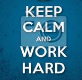
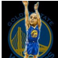

嗖嗖嗖周末

嗖嗖嗖周末
组队原因
去年八月份的时在候有这个想法，准备转行。工作三年，本来是做设计的。但浸淫三年之后发现设计路上天赋差距简直不能比，很多同事的想法和热情简直是自己此生无法企及的状态。赶上行业不景气，这一轮的升职加薪都没有轮的上。自己之前捣鼓作品集的时候用wordpress做过一个网页。发现自己对编程还满感兴趣。于是决心转行。
走在路上
把这个想法跟大学同学讲了，他生活也遇到瓶颈，在苦寻出路，于是一拍即合，干。想起大学另外一位同学做web的后端，也许能有指导之类的。联系的时候勾起了这个同学全站工程师的愿景。同样法子拉了一个高中学霸同学，希望能是个大腿。目前来看，在路上最难的是开始。加油吧少年